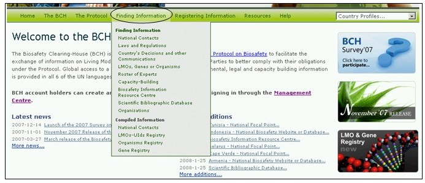
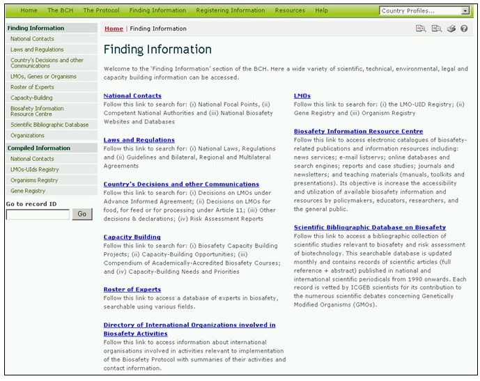

URL:http://bch.cbd.int/database/
Les liens vers des catégories d’information dans les bases de données du Portail Central du CEPRB sont fournies dans le menu déroulant Trouver l’information sur la barre de navigation.

Figure 39
Chaque catégorie donnée dans cette page est reliée à une interface de recherche conçue pour optimiser le repérage d’information spécifique. De la page de l’interface de recherche, il est également possible de parcourir toutes les entrées à n’importe laquelle des catégories en utilisant le bouton ‘Parcourir tous les enregistrements ».

Figure 40
Les types de données stockées dans les bases de données du CEPRB et les instructions pour trouver l'information sont détaillés au Module MO04.